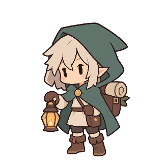
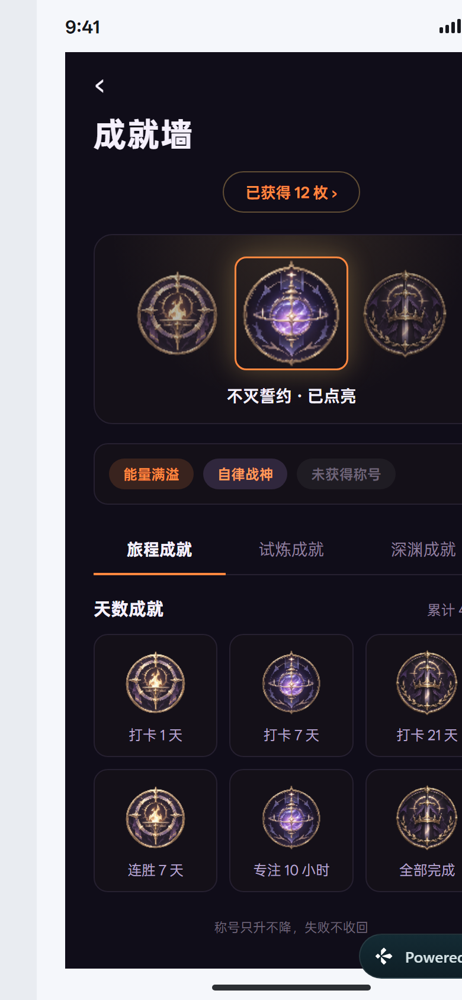
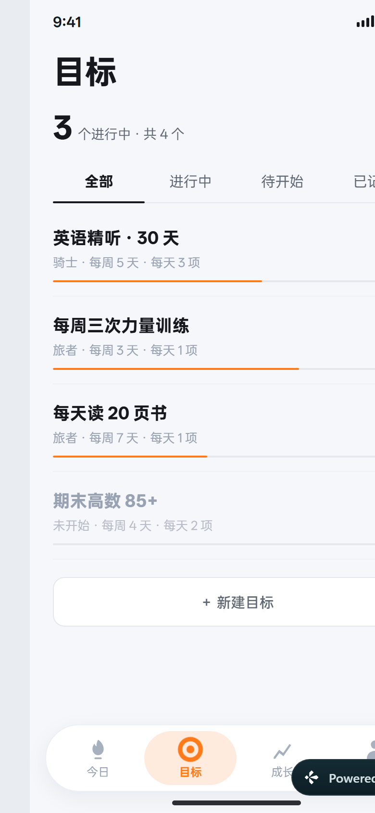

CINIS.
A gamified self-discipline product that turns habit-building into a role-playing journey — built on three modes and a soul-flame growth system.
Overview
01CINIS reframes discipline as narrative. Users commit to daily tasks, accumulate 魂火 (soul-flame), and face staged consequences — making consistency feel like a story worth continuing rather than a streak to protect.
Background & Problem
02Most habit apps optimise for streaks and guilt: miss a day and the number resets, the motivation dies. The design problem was to build consequence without shame — a system where failure is a chapter, not an ending.
Design rationale drawn from the prototype. Verified research data and outcome metrics are TODO — none are fabricated.
Three-Mode Mechanism
03 · 旅者 / 骑士 / 深渊No threshold
Forgiving onboarding; restart from a small flame. For building the first habit.

Covenant, recoverable
Commitment with a reclaimable stake — tension without despair.
Contract broken
High reward, harsh reset. The gamble that makes each day matter.

Each mode owns an independent failure branch — structure and visuals differ, not just colour.
魂火 Growth System
04
Soul-flame rises with completed tasks, powers stages, and visualises momentum. Milestone stones turn abstract progress into a path you can literally see.
UI Interface
05 · Real captures





Screens are real captures of the live CINIS prototype.
Prototype
06Try the live
prototype
23 screens · 3 modes · real countdown · clickable in a phone browser.
Open live demo ↗Embed & external link
Final site keeps an in-page phone-frame iframe plus a standalone demo link so the prototype stays reachable after CINIS becomes a case study.
cinis.netlify.app
Reflection
07CINIS demonstrates end-to-end product thinking: clear positioning, a three-mode mechanic with real consequence design, a coherent growth system, and a full hi-fi interaction prototype.
Outcome metrics and user-testing results: TODO — intentionally not invented.